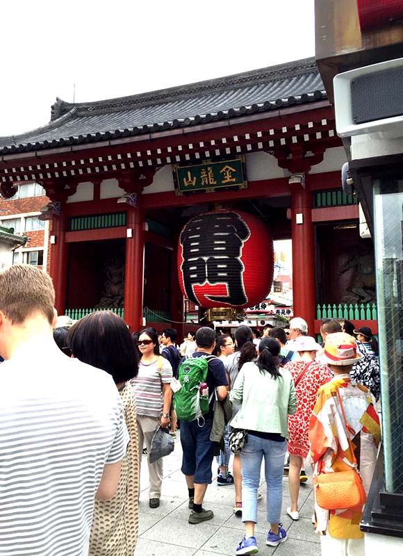
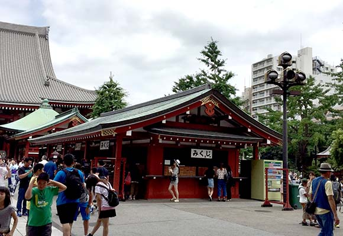
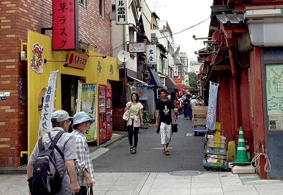
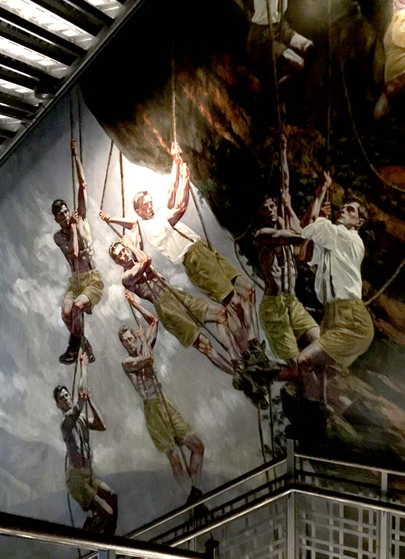
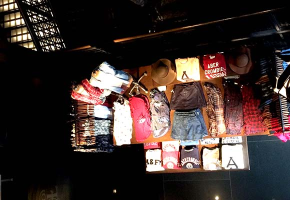
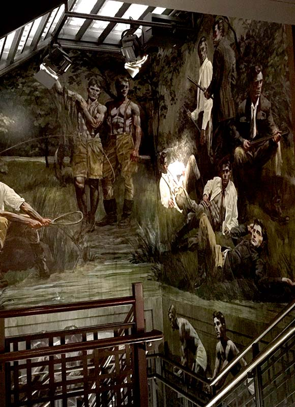
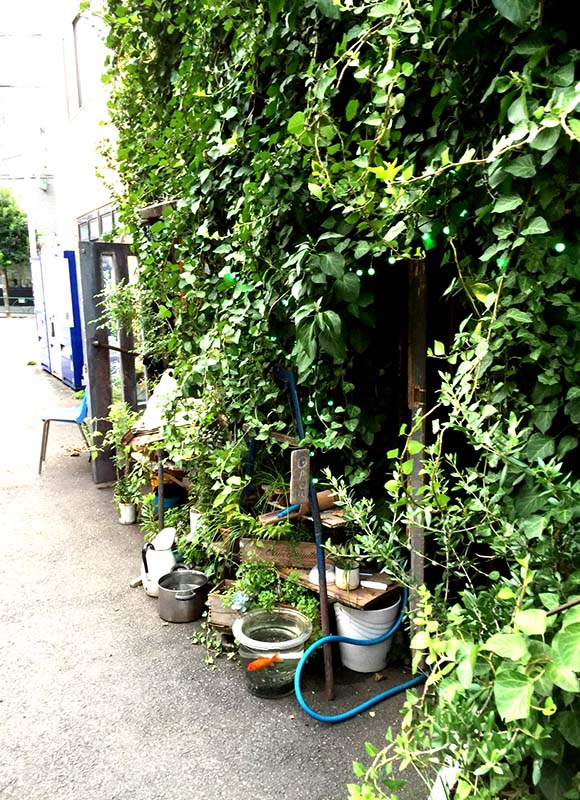
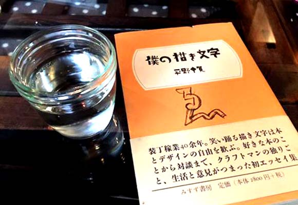

浅草名代らーめん
与ろゐ屋
甘味処 浅草いづ美
ギンザ・グラフィッ
ク・ギャラリー
淺草、銀座
神東京大神宮
柴又寅さん記念館
葛飾納涼花火大會
東京大人味發見
Day4-2015.07.26
< 淺 草、銀 座、葛 飾 區>
我不喜歡觀光客的地方，但是我還蠻喜歡很有歷史性的東西所以還是有來淺草寺，另外我們去了比較隱藏版的大神宮
和隱藏版的咖啡小店，因為我說來日本要喝咖啡邊看書，所以真的去了很多咖啡店，但是因為要走很多路又怕背包很
重所以帶來的書一本沒有一天帶出們一直在行李箱裡，所以拿了店裡的一本日文書來假裝日本人。
   
   
back